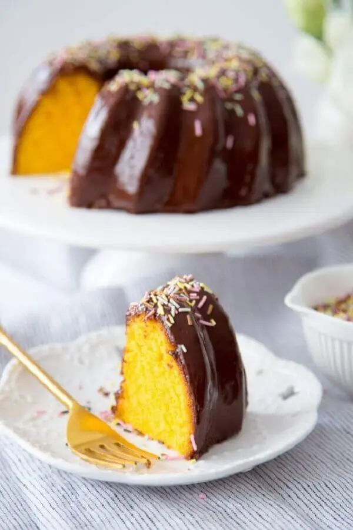

Bolos com sabor de casa e acabamento de vitrine
Receitas afetivas, massas fofinhas e cobertura caprichada para encomendas que merecem destaque.
Atendimento atencioso, producao artesanal e sabores pensados para quem quer servir bem em aniversarios, reunioes, datas especiais e vendas sob encomenda. Aqui, cada detalhe e preparado para impressionar.

A RKdoces une visual apetitoso, preparo artesanal e apresentacao cuidadosa para ajudar confeiteiras e clientes finais a encontrarem a opcao ideal para cada pedido.

Receitas afetivas, massas fofinhas e cobertura caprichada para encomendas que merecem destaque.

Brigadeiros, tortas e sobremesas com visual delicado para impressionar no primeiro olhar.

Opcoes praticas, saborosas e com apresentacao ideal para receber bem ou vender com confianca.
Este site foi reorganizado para apresentar a RKdoces com imagem mais profissional, textos de venda mais claros e navegacao objetiva. O objetivo e facilitar o atendimento e transmitir mais valor em cada contato.
Fale diretamente com a RKdoces para montar seu pedido, tirar duvidas sobre quantidades, sabores, datas disponiveis e opcoes para festas e eventos.
Se voce trabalha com encomendas, a apresentacao da sua marca influencia diretamente a decisao de compra. A RKdoces agora se posiciona como uma vitrine clara, acolhedora e pronta para converter visitas em pedidos.
 Falar com a RKdoces
Falar com a RKdoces